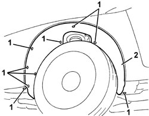

7055B90 LEFT FRONT WHEEL ARCH LINER - R.R.
- Path
- Procedures > 70 FITTINGS > 7055 MOULDINGS AND PROTECTION > 7055B EXTERIOR PROTECTIONS > 7055B90 LEFT FRONT WHEEL ARCH LINER - R.R.
- Kind
- repair procedure (removal / refitting; the operation number is the code)
- Applies to
- all engines; all production periods
- Interactive page
- https://sloeber94.github.io/elrnDB/alfa/159/en/#/939011363
Applies to: all engines; all production periods
 Removing
Removing
 Refitting
Refitting- Position the vehicle on a lift.
- Raise the vehicle.
1. Undo the bolts fixing the wheel arch.
2. Remove the wheel arch releasing it from its housing.

Applies to: all engines; all production periods
Refitting
Removing- Check that the wheel arch is not damaged.
- Place the wheel arch in position and fit it.
- Tighten the wheel arch retaining bolts.
- Remove the vehicle from the lift.
Topics that link to this page (10)
- 1004B10 POWER UNIT WITH MANUAL GEARBOX - R.R
- 3310A30 FRONT BRAKE CALIPER (ONE) - R.R
- 3340A30 RPM SENSOR (ONE) FOR ONE FRONT WHEEL, LEFT OR RIGHT - R.R.
- 3340B10 HOSE TO L/H OR R/H FRONT BRAKES (ONE) - R+R
- 4410B40 LOWER TRACK CONTROL ARM (WITH BALLJOINT) FOR LEFT OR RIGHT FRONT SUSPENSION (ONE) - R+R - CHECK WHEEL GEOMETRY SEPARATELY
- 5505C28 ENGINE COMPARTMENT AND A.B.S BUILT-IN WIRING - R.R.
- 5540C42 SENSOR FOR CORRECTING/ALIGNING GAS DISCHARGE LIGHTING UNITS ON FRONT SUSPENSION - R R
- 5540C44 BAR FOR FRONT SENSOR FOR CORRECTING/ALIGNING GAS DISCHARGE LIGHTING UNITS R R
- 7030B38 SLIDING ROOF DRAINAGE PIPES (WATER DRAIN) - CHECK
- 7210E18 R.R. FRONT WING